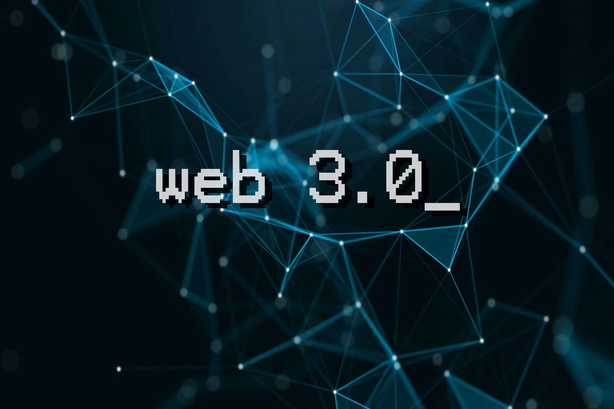
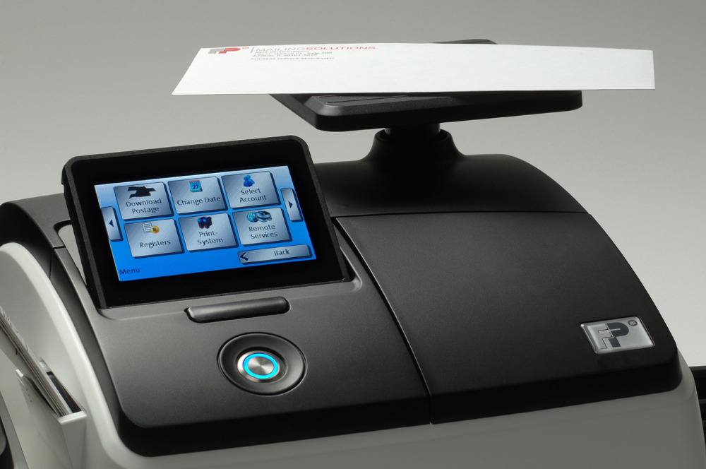

Web3athon is a hackathon that aims to bring creatives and developers together to solve some of the most pressing hyperlocal problems facing communities all over the world.
During this hackathon, I teamed up with Natalia Kurbakova and created 4 project idea's that were shortlisted to the second round.
Projects:
Cryptostate
Cryptostate inspires to combat the needs of buyers and the builders, where home building supply costs are available to see for the home buyers.
Starting Capital
Opportunities for first-gen wealth builders to accumulate wealth.
Neighbor
In Neighbor blockchain an individual DAOs can suggest, upvote, and build their own projects/applications that will improve the neighborhood.
PocketMoney
PocketMoney is a decentralized application powered by Accumulate and designed for young adults to help transfer part of their wealth to their children.

Pitney Bowes challenge asks the participants to create a model based on their dataset. Then test the model on it, and report back to the challengers with dataset of the machines that will fail based on the model.
In team of 3, me, Natalia Kurbakova and Zi Zeng successfully cleaned the data, performed ETL, established KPI, utilized data profiling, and created multiple data modeling.
As a result of our submission, we became the runner up team with the best data insights and solution.
May 01, 2022
BY: Khilola Rustamova, Jason Mei, Jacky Chen, and Yizuo Zheng
New York City has been very loud for decades due to the mass amount of people, its crime rates have also been increasing throughout the years. In some regions of NYC crime rates can be much higher than others which can correspond with that region having more noise complaints in Residential, Street/Sidewalks, Commercial buildings, and Parks all around NYC.
The crime dataset can link the number of noise complaints per city/borough with the number of crimes per city/borough.
The goal is to explore whether areas with higher crime rates experience more noise complaints or not.
Areas where there’s a lot of sex crimes/harassment may contribute to the noise complaints that occur in those areas.
Another possibility is that areas where there’s theft occurring in a Resident - Apt.
House may result in a filing for noise complaint as Residential noise type for our primary dataset.